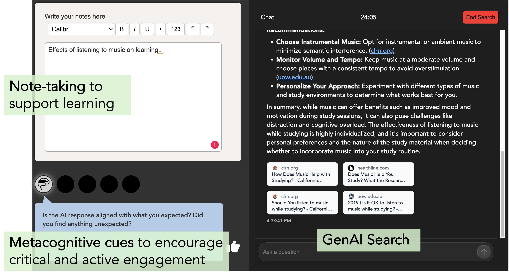
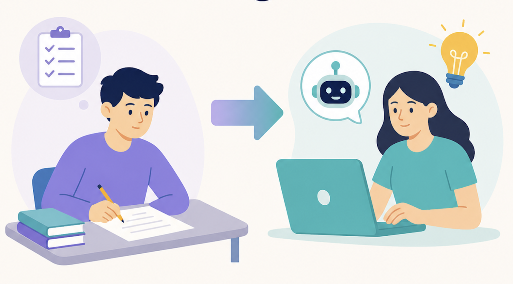
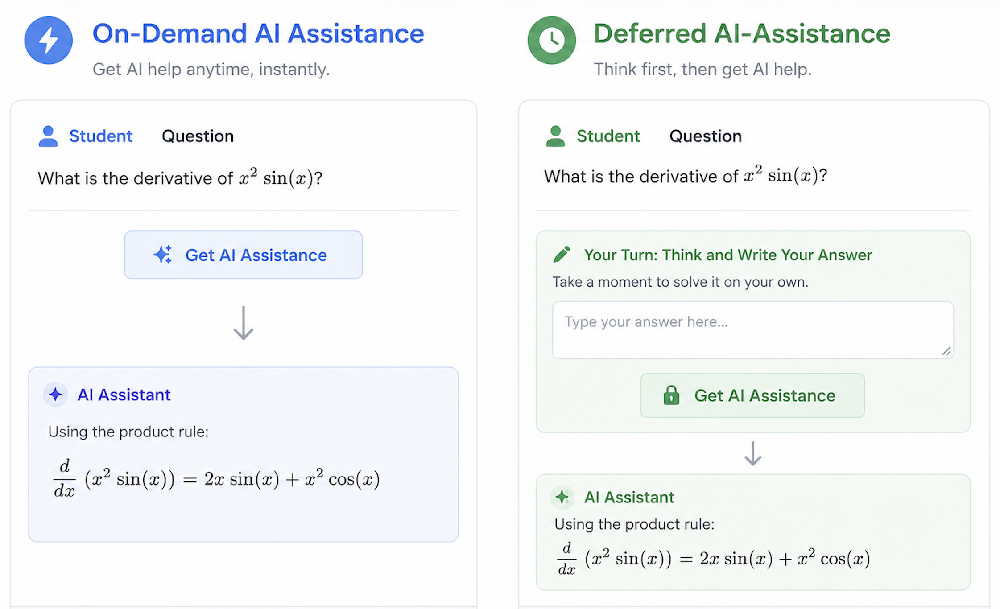
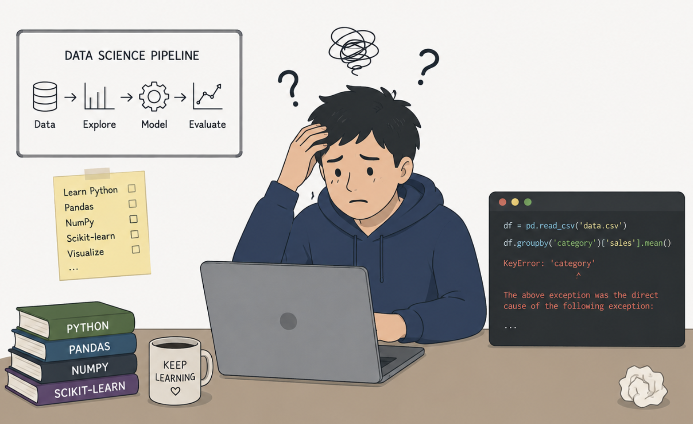
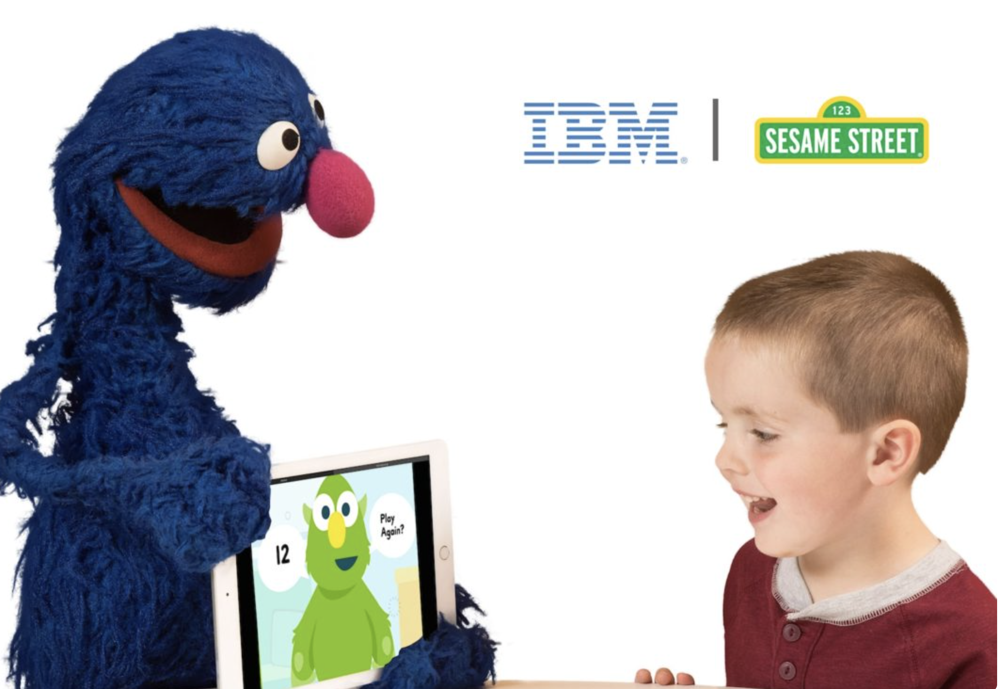

I am a human-centered systems researcher working at the intersection of human behavior, learning and AI. My work explores how people think, learn, reason, and adapt in increasingly AI-mediated environments. I am particularly interested in fostering people's ability to reflect on information, develop independent judgment, and maintain agency as AI becomes more deeply integrated into everyday life and work.
To pursue these questions, I draw on perspectives from cognitive science, information science, and human-computer interaction (HCI). Methodologically, my work combines empirical research, experimentation, design, and theory-building to understand human behavior, motivation, and outcomes in information-seeking and learning environments, and to develop technologies that support learning, critical thinking, and human agency.
Across my research, I have often found myself bridging different worlds—academia and industry, pedagogy and scalable educational technologies, and human expertise and AI. I am especially drawn to problems that require integrating rigorous evidence with practical impact.
My work has been recognized with several Best Paper awards in leading learning sciences and technology venues and has reached thousands of learners globally. I hold a PhD in Information from the University of Michigan and a Bachelor's and Master's degree in Mathematics and Computing from IIT Delhi (Indian Institute of Technology Delhi).
Outside of work, I enjoy music, dancing, yoga, reading, and spending time in nature.
Postdoctoral Research Fellow, University of Texas at Austin
Excited to be attending the Festival of Learning in Seoul, South Korea! I'll be presenting a demo of our system MetaCues: GenAI-Supported Exploratory Learning Guided by Metacognitive Cues. Check out the preprint on MetaCues.
Our paper Impact of Multimodal and Conversational AI on Learning Outcomes and Experience was accepted at the 27th International Conference on Artificial Intelligence in Education (AIED) 2026, to be held in Seoul, South Korea.
Co-organized the Workshop on Tools for Thought: Understanding, Protecting, and Augmenting Human Cognition with Generative AI at CHI 2026 in Barcelona, Spain.
Excited to be attending my first SXSW EDU Conference in Austin, Texas!
Our paper Toward Scalable and Responsible Integration of Course-Specific AI Tutors: Instructor Experiences with a Campus-Wide Platform was accepted at the CHI, 2026.
I presented our work Enhancing Critical Thinking in Generative AI Search with Metacognitive Prompts at the ASIS&T 2025 Conference in Washington, D.C.
I gave an invited talk at the Workshop on Learning Sciences & Learning Technologies: Research Directions for the Next Decade at EPFL, Lausanne.
I attended the Artificial Intelligence in Education (AIED) Conference in Palermo, Italy, where my collaborator Karan Taneja presented our work Towards a Multimodal Document-grounded Conversational AI System for Education.
I presented our work Protecting Human Cognition in the Age of AI at the Tools for Thought Workshop at CHI 2025 in Yokohama, Japan.





AIED 2026
CHI 2026
arXiv 2026
arXiv 2026
Doctoral Dissertation, University of Michigan
🏆 Best Short Paper — LAK 2024LAK 2024
LAK 2024
SIGCSE 2024
I'm always happy to talk about research, collaboration opportunities, or ideas at the intersection of learning, human behavior, and AI.
singhanj13 [at] gmail [dot] com